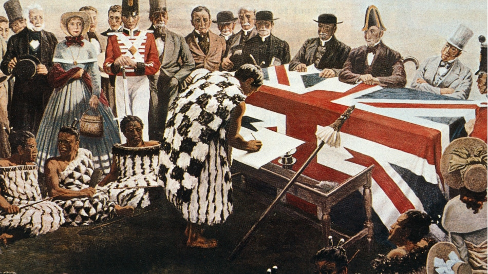
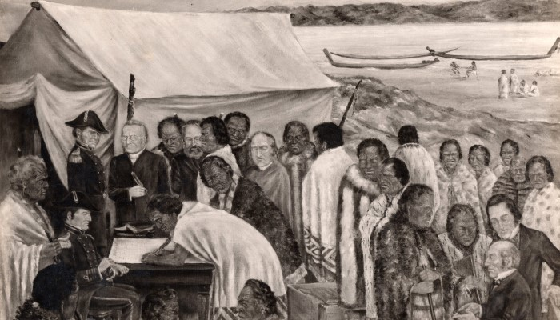
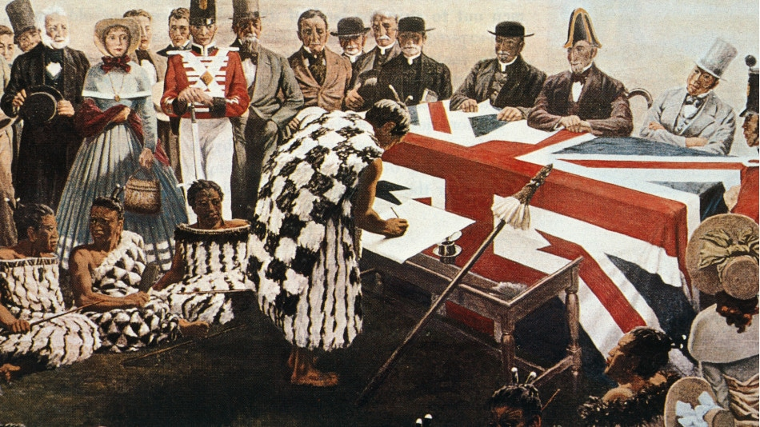
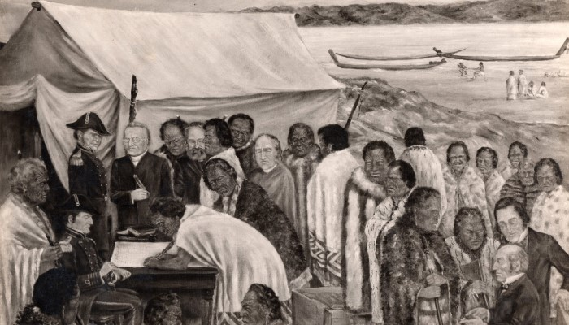

Te Tiriti o Waitangi (known in English as the Treaty of Waitangi), is an agreement made in 1840 between representatives of the British Crown and (ultimately) more than 500 rangatira Māori. It resulted in the declaration of British sovereignty over New Zealand by Lieutenant-Governor William Hobson in May 1840. Most Māori signed the te reo tiriti.
The main purpose of the Treaty was to ensure that both parties to it would live together peacefully and develop New Zealand together in partnership. The Treaty does this by assuring Māori that their interests will be protected and confirming citizen equality.
 


